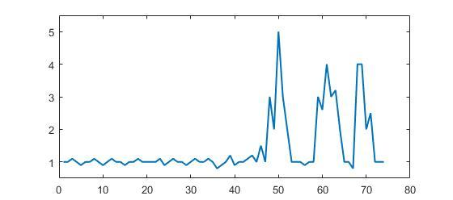

Peak signal detection in realtime timeseries data
Update: The best performing algorithm so far is this one.
This question explores robust algorithms for detecting sudden peaks in real- time timeseries data.
Consider the following example data:

Example of this data is in Matlab format (but this question is not about the language but about the algorithm):
p = [1 1 1.1 1 0.9 1 1 1.1 1 0.9 1 1.1 1 1 0.9 1 1 1.1 1 1 1 1 1.1 0.9 1 1.1 1 1 0.9, ...
1 1.1 1 1 1.1 1 0.8 0.9 1 1.2 0.9 1 1 1.1 1.2 1 1.5 1 3 2 5 3 2 1 1 1 0.9 1 1, ...
3 2.6 4 3 3.2 2 1 1 0.8 4 4 2 2.5 1 1 1];
You can clearly see that there are three large peaks and some small peaks. This dataset is a specific example of the class of timeseries datasets that the question is about. This class of datasets has two general features:
- There is basic noise with a general mean
- There are large ' peaks ' or ' higher data points ' that significantly deviate from the noise.
Let's also assume the following:
- The width of the peaks cannot be determined beforehand
- The height of the peaks significantly deviates from the other values
- The algorithm updates in realtime (so updates with each new datapoint)
For such a situation, a boundary value needs to be constructed which triggers signals. However, the boundary value cannot be static and must be determined realtime based on an algorithm.
My Question: what is a good algorithm to calculate such thresholds in realtime? Are there specific algorithms for such situations? What are the most well-known algorithms?
Robust algorithms or useful insights are all highly appreciated. (can answer in any language: it's about the algorithm)
Answer
Robust peak detection algorithm (using z-scores)
I came up with an algorithm that works very well for these types of datasets.
It is based on the principle of dispersion: if a new datapoint is a given x
number of standard deviations away from some moving mean, the algorithm
signals (also called z-score). The algorithm is very robust because it
constructs a separate moving mean and deviation, such that signals do not
corrupt the threshold. Future signals are therefore identified with
approximately the same accuracy, regardless of the amount of previous signals.
The algorithm takes 3 inputs: lag = the lag of the moving window, threshold
= the z-score at which the algorithm signals and influence = the influence
(between 0 and 1) of new signals on the mean and standard deviation. For
example, a lag of 5 will use the last 5 observations to smooth the data. A
threshold of 3.5 will signal if a datapoint is 3.5 standard deviations away
from the moving mean. And an influence of 0.5 gives signals half of the
influence that normal datapoints have. Likewise, an influence of 0 ignores
signals completely for recalculating the new threshold. An influence of 0 is
therefore the most robust option (but assumes stationarity); putting the
influence option at 1 is least robust. For non-stationary data, the influence
option should therefore be put somewhere between 0 and 1.
It works as follows:
Pseudocode
# Let y be a vector of timeseries data of at least length lag+2 # Let mean() be a function that calculates the mean # Let std() be a function that calculates the standard deviaton # Let absolute() be the absolute value function # Settings (these are examples: choose what is best for your data!) set lag to 5; # average and std. are based on past 5 observations set threshold to 3.5; # signal when data point is 3.5 std. away from average set influence to 0.5; # between 0 (no influence) and 1 (full influence) # Initialize variables set signals to vector 0,...,0 of length of y; # Initialize signal results set filteredY to y(1),...,y(lag) # Initialize filtered series set avgFilter to null; # Initialize average filter set stdFilter to null; # Initialize std. filter set avgFilter(lag) to mean(y(1),...,y(lag)); # Initialize first value average set stdFilter(lag) to std(y(1),...,y(lag)); # Initialize first value std. for i=lag+1,...,t do if absolute(y(i) - avgFilter(i-1)) > threshold*stdFilter(i-1) then if y(i) > avgFilter(i-1) then set signals(i) to +1; # Positive signal else set signals(i) to -1; # Negative signal end set filteredY(i) to influence*y(i) + (1-influence)*filteredY(i-1); else set signals(i) to 0; # No signal set filteredY(i) to y(i); end set avgFilter(i) to mean(filteredY(i-lag+1),...,filteredY(i)); set stdFilter(i) to std(filteredY(i-lag+1),...,filteredY(i)); end
Rules of thumb for selecting good parameters for your data can be found below.
Demo

The Matlab code for this demo can be found here. To use the demo, simply
run it and create a time series yourself by clicking on the upper chart. The
algorithm starts working after drawing lag number of observations.
Result
For the original question, this algorithm will give the following output when
using the following settings: lag = 30, threshold = 5, influence = 0:
Implementations in different programming languages:
-
Matlab (me)
-
R (me)
-
Golang (Xeoncross)
-
Golang [efficient version] (Micah Parks)
-
Python (R Kiselev)
-
Python [efficient version] (delica)
-
Swift (me)
-
Groovy (JoshuaCWebDeveloper)
-
C++ [interactive parameters] (Jason C)
-
C++ (Animesh Pandey)
-
Rust (swizard)
-
Scala (Mike Roberts)
-
Kotlin (leoderprofi)
-
Ruby (Kimmo Lehto)
-
Fortran [for resonance detection] (THo)
-
Julia (Matt Camp)
-
C# (Ocean Airdrop)
-
C (DavidC)
-
Java (takanuva15)
-
JavaScript (Dirk Lüsebrink)
-
TypeScript (Jerry Gamble)
-
Perl (Alen)
-
PHP (radhoo)
-
PHP (gtjamesa)
-
Dart (Sga)
Rules of thumb for configuring the algorithm
lag : the lag parameter determines how much your data will be smoothed
and how adaptive the algorithm is to changes in the long-term average of the
data. The more stationary your data is, the more lags you should include (this
should improve the robustness of the algorithm). If your data contains time-
varying trends, you should consider how quickly you want the algorithm to
adapt to these trends. I.e., if you put lag at 10, it takes 10 'periods'
before the algorithm's treshold is adjusted to any systematic changes in the
long-term average. So choose the lag parameter based on the trending
behavior of your data and how adaptive you want the algorithm to be.
influence : this parameter determines the influence of signals on the
algorithm's detection threshold. If put at 0, signals have no influence on the
threshold, such that future signals are detected based on a threshold that is
calculated with a mean and standard deviation that is not influenced by past
signals. If put at 0.5, signals have half the influence of normal data
points. Another way to think about this is that if you put the influence at 0,
you implicitly assume stationarity (i.e. no matter how many signals there are,
you always expect the time series to return to the same average over the long
term). If this is not the case, you should put the influence parameter
somewhere between 0 and 1, depending on the extent to which signals can
systematically influence the time-varying trend of the data. E.g., if signals
lead to a structural break of the long-term average of the time series, the
influence parameter should be put high (close to 1) so the threshold can react
to structural breaks quickly.
threshold : the threshold parameter is the number of standard
deviations from the moving mean above which the algorithm will classify a new
datapoint as being a signal. For example, if a new datapoint is 4.0 standard
deviations above the moving mean and the threshold parameter is set as 3.5,
the algorithm will identify the datapoint as a signal. This parameter should
be set based on how many signals you expect. For example, if your data is
normally distributed, a threshold (or: z-score) of 3.5 corresponds to a
signaling probability of 0.00047 (from this table), which implies that you
expect a signal once every 2128 datapoints (1/0.00047). The threshold
therefore directly influences how sensitive the algorithm is and thereby also
determines how often the algorithm signals. Examine your own data and choose a
sensible threshold that makes the algorithm signal when you want it to (some
trial-and-error might be needed here to get to a good threshold for your
purpose).
WARNING: The code above always loops over all datapoints everytime it
runs. When implementing this code, make sure to split the calculation of the
signal into a separate function (without the loop). Then when a new datapoint
arrives, update filteredY, avgFilter and stdFilter once. Do not
recalculate the signals for all data everytime there is a new datapoint (like
in the example above), that would be extremely inefficient and slow in real-
time applications.
Other ways to modify the algorithm (for potential improvements) are:
- Use median instead of mean
- Use a robust measure of scale, such as the median absolute deviation (MAD), instead of the standard deviation
- Use a signalling margin, so the signal doesn't switch too often
- Change the way the influence parameter works
- Treat up and down signals differently (asymmetric treatment)
- Create a separate
influenceparameter for the mean and std (as in this Swift translation)
(Known) academic citations to this StackOverflow answer:
-
Catalbas, M. C., & Dobrisek, S. (2023). Dynamic speaker localization based on a novel lightweight R–CNN model. Neural Computing and Applications , 1-15.
-
Cai, Y., Wang, X., Joos, G., & Kamwa, I. (2022). An Online Data-Driven Method to Locate Forced Oscillation Sources from Power Plants Based on Sparse Identification of Nonlinear Dynamics (SINDy). IEEE Transactions on Power Systems.
-
Yang, S., Yim, J., Kim, J., & Shin, H. V. (2022). CatchLive: Real-time Summarization of Live Streams with Stream Content and Interaction Data. CHI Conference on Human Factors in Computing Systems , 1-20.
-
Feng, D., Tan, Z., Engwirda, D., Liao, C., Xu, D., Bisht, G., ... & Leung, R. (2022). Investigating coastal backwater effects and flooding in the coastal zone using a global river transport model on an unstructured mesh. Hydrology and Earth System Sciences Discussions , 1-31 [preprint].
-
Link, J., Perst, T., Stoeve, M., & Eskofier, B. M. (2022). Wearable sensors for activity recognition in ultimate frisbee using convolutional neural networks and transfer learning. Sensors , 22(7), 2560.
-
Romeiro, J. M. N., Torres, F. T. P., & Pirotti, F. (2021). Evaluation of Effect of Prescribed Fires Using Spectral Indices and SAR Data. Bollettino della società italiana di fotogrammetria e topografia , (2), 36-56.
-
Moore, J., Goffin, P., Wiese, J., & Meyer, M. (2021). An Interview Method for Engaging Personal Data. Proceedings of the ACM on Interactive, Mobile, Wearable and Ubiquitous Technologies , 5(4), 1-28.
-
Rykov, Y., Thach, T. Q., Bojic, I., Christopoulos, G., & Car, J. (2021). Digital Biomarkers for Depression Screening With Wearable Devices: Cross-sectional Study With Machine Learning Modeling. JMIR mHealth and uHealth , 9(10), e24872.
-
Hong, Y., Xin, Y., Martin, H., Bucher, D., & Raubal, M. (2021). A Clustering-Based Framework for Individual Travel Behaviour Change Detection. In 11th International Conference on Geographic Information Science (GIScience 2021)-Part II.
-
Grammenos, A., Kalyvianaki, E., & Pietzuch, P. (2021). Pronto: Federated Task Scheduling. arXiv preprint arXiv:2104.13429.
-
Courtial, N. (2020). Fusion d’images multimodales pour l’assistance de procédures d’électrophysiologie cardiaque. Doctoral dissertation , Université Rennes.
-
Beckman, W. F., Jiménez, M. Á. L., Moerland, P. D., Westerhoff, H. V., & Verschure, P. J. (2020). 4sUDRB-sequencing for genome-wide transcription bursting quantification in breast cancer cells. bioRxiv.
-
Olkhovskiy, M., Müllerová, E., & Martínek, P. (2020). Impulse signals classification using one dimensional convolutional neural network. Journal of Electrical Engineering, 71(6), 397-405.
-
Gao, S., & Calderon, D. P. (2020). Robust alternative to the righting reflex to assess arousal in rodents. Scientific reports, 10(1), 1-11.
-
Chen, G. & Dong, W. (2020). Reactive Jamming and Attack Mitigation over Cross-Technology Communication Links. ACM Transactions on Sensor Networks, 17(1).
-
Takahashi, R., Fukumoto, M., Han, C., Sasatani, T., Narusue, Y., & Kawahara, Y. (2020). TelemetRing: A Batteryless and Wireless Ring-shaped Keyboard using Passive Inductive Telemetry. In Proceedings of the 33rd Annual ACM Symposium on User Interface Software and Technology (pp. 1161-1168).
-
Negus, M. J., Moore, M. R., Oliver, J. M., Cimpeanu, R. (2020). Droplet impact onto a spring-supported plate: analysis and simulations. Journal of Engineering Mathematics, 128(3).
-
Yin, C. (2020). Dinucleotide repeats in coronavirus SARS-CoV-2 genome: evolutionary implications. ArXiv e-print, accessible from: https://arxiv.org/pdf/2006.00280.pdf
-
Esnaola-Gonzalez, I., Gómez-Omella, M., Ferreiro, S., Fernandez, I., Lázaro, I., & García, E. (2020). An IoT Platform Towards the Enhancement of Poultry Production Chains. Sensors, 20(6), 1549.
-
Gao, S., & Calderon, D. P. (2020). Continuous regimens of cortico-motor integration calibrate levels of arousal during emergence from anesthesia. bioRxiv.
-
Cloud, B., Tarien, B., Liu, A., Shedd, T., Lin, X., Hubbard, M., ... & Moore, J. K. (2019). Adaptive smartphone-based sensor fusion for estimating competitive rowing kinematic metrics. PloS one, 14(12).
-
Ceyssens, F., Carmona, M. B., Kil, D., Deprez, M., Tooten, E., Nuttin, B., ... & Puers, R. (2019). Chronic neural recording with probes of subcellular cross-section using 0.06 mm² dissolving microneedles as insertion device. Sensors and Actuators B: Chemical , 284, pp. 369-376.
-
Dons, E., Laeremans, M., Orjuela, J. P., Avila-Palencia, I., de Nazelle, A., Nieuwenhuijsen, M., ... & Nawrot, T. (2019). Transport Most Likely to Cause Air Pollution Peak Exposures in Everyday Life: Evidence from over 2000 Days of Personal Monitoring. Atmospheric Environment , 213, 424-432.
-
Schaible B.J., Snook K.R., Yin J., et al. (2019). Twitter conversations and English news media reports on poliomyelitis in five different countries, January 2014 to April 2015. The Permanente Journal , 23, 18-181.
-
Lima, B. (2019). Object Surface Exploration Using a Tactile-Enabled Robotic Fingertip (Doctoral dissertation, Université d'Ottawa/University of Ottawa).
-
Lima, B. M. R., Ramos, L. C. S., de Oliveira, T. E. A., da Fonseca, V. P., & Petriu, E. M. (2019). Heart Rate Detection Using a Multimodal Tactile Sensor and a Z-score Based Peak Detection Algorithm. CMBES Proceedings , 42.
-
Lima, B. M. R., de Oliveira, T. E. A., da Fonseca, V. P., Zhu, Q., Goubran, M., Groza, V. Z., & Petriu, E. M. (2019, June). Heart Rate Detection Using a Miniaturized Multimodal Tactile Sensor. In 2019 IEEE International Symposium on Medical Measurements and Applications (MeMeA) (pp. 1-6). IEEE.
-
Ting, C., Field, R., Quach, T., Bauer, T. (2019). Generalized Boundary Detection Using Compression-based Analytics. ICASSP 2019 - 2019 IEEE International Conference on Acoustics, Speech and Signal Processing (ICASSP) , Brighton, United Kingdom, pp. 3522-3526.
-
Carrier, E. E. (2019). Exploiting compression in solving discretized linear systems. Doctoral dissertation , University of Illinois at Urbana-Champaign.
-
Khandakar, A., Chowdhury, M. E., Ahmed, R., Dhib, A., Mohammed, M., Al-Emadi, N. A., & Michelson, D. (2019). Portable system for monitoring and controlling driver behavior and the use of a mobile phone while driving. Sensors , 19(7), 1563.
-
Baskozos, G., Dawes, J. M., Austin, J. S., Antunes-Martins, A., McDermott, L., Clark, A. J., ... & Orengo, C. (2019). Comprehensive analysis of long noncoding RNA expression in dorsal root ganglion reveals cell-type specificity and dysregulation after nerve injury. Pain , 160(2), 463.
-
Cloud, B., Tarien, B., Crawford, R., & Moore, J. (2018). Adaptive smartphone-based sensor fusion for estimating competitive rowing kinematic metrics. engrXiv Preprints.
-
Zajdel, T. J. (2018). Electronic Interfaces for Bacteria-Based Biosensing. Doctoral dissertation , UC Berkeley.
-
Perkins, P., Heber, S. (2018). Identification of Ribosome Pause Sites Using a Z-Score Based Peak Detection Algorithm. IEEE 8th International Conference on Computational Advances in Bio and Medical Sciences (ICCABS) , ISBN: 978-1-5386-8520-4.
-
Moore, J., Goffin, P., Meyer, M., Lundrigan, P., Patwari, N., Sward, K., & Wiese, J. (2018). Managing In-home Environments through Sensing, Annotating, and Visualizing Air Quality Data. Proceedings of the ACM on Interactive, Mobile, Wearable and Ubiquitous Technologies , 2(3), 128.
-
Lo, O., Buchanan, W. J., Griffiths, P., and Macfarlane, R. (2018), Distance Measurement Methods for Improved Insider Threat Detection , Security and Communication Networks , Vol. 2018, Article ID 5906368.
-
Apurupa, N. V., Singh, P., Chakravarthy, S., & Buduru, A. B. (2018). A critical study of power consumption patterns in Indian Apartments. Doctoral dissertation , IIIT-Delhi.
-
Scirea, M. (2017). Affective Music Generation and its effect on player experience. Doctoral dissertation , IT University of Copenhagen, Digital Design.
-
Scirea, M., Eklund, P., Togelius, J., & Risi, S. (2017). Primal-improv: Towards co-evolutionary musical improvisation. Computer Science and Electronic Engineering (CEEC) , 2017 (pp. 172-177). IEEE.
-
Catalbas, M. C., Cegovnik, T., Sodnik, J. and Gulten, A. (2017). Driver fatigue detection based on saccadic eye movements , 10th International Conference on Electrical and Electronics Engineering (ELECO), pp. 913-917.
Other works using the algorithm from this answer
-
Bergamini, E. and E. Mourlon-Druol (2021). Talking about Europe: exploring 70 years of news archives. Working Paper 04/2021, Bruegel.
-
Cox, G. (2020). Peak Detection in a Measured Signal. Online article on https://www.baeldung.com/cs/signal-peak-detection.
-
Raimundo, D. W. (2020). SwitP: Mobile Application for Real-Time Swimming Analysis.. Semester Thesis , ETH Zürich.
-
Bernardi, D. (2019). A feasibility study on pairing a smartwatch and a mobile device through multi-modal gestures. Master thesis , Aalto University.
-
Lemmens, E. (2018). Outlier detection in event logs by using statistical methods , Master thesis , University of Eindhoven.
-
Willems, P. (2017). Mood controlled affective ambiences for the elderly , Master thesis , University of Twente.
-
Ciocirdel, G. D. and Varga, M. (2016). Election Prediction Based on Wikipedia Pageviews. Project paper , Vrije Universiteit Amsterdam.
Other applications of the algorithm from this answer
-
Avo Audit dbt package. Avo Company (next-generation analytics governance).
-
Synthesized speech with OpenBCI system , SarahK01.
-
Python package: Machine Learning Financial Laboratory , based on the work of De Prado, M. L. (2018). Advances in financial machine learning. John Wiley & Sons.
-
Adafruit CircuitPlayground Library , Adafruit board (Adafruit Industries)
-
Step tracker algorithm , Android App (jeeshnair)
-
R package: animaltracker (Joe Champion, Thea Sukianto)
Links to other peak detection algorithms
- Real-time peak detection in noisy sinusoidal time-series
How to reference this algorithm:
Brakel, J.P.G. van (2014). "Robust peak detection algorithm using z-scores". Stack Overflow. Available at: https://stackoverflow.com/questions/22583391/peak-signal-detection-in- realtime-timeseries-data/22640362#22640362 (version: 2020-11-08).
Bibtex @misc{brakel2014, author = {Brakel, J.P.G van}, title = {Robust peak detection algorithm using z-scores}, url = {https://stackoverflow.com/questions/22583391/peak-signal-detection-in- realtime-timeseries-data/22640362#22640362}, language = {en}, year = {2014}, urldate = {2022-04-12}, journal = {Stack Overflow}, howpublished = {https://stackoverflow.com/questions/22583391/peak-signal-detection-in- realtime-timeseries-data/22640362#22640362}}
If you use this function somewhere, please credit me by using above reference. If you have any questions about the algorithm, post them in the comments below or contact me on LinkedIn.
Suggest
Here is the Python / numpy implementation of the smoothed z-score
algorithm (see answer above). You can find the gist here.
Below is the test on the same dataset that yields the same plot as in the
original answer for R/Matlab
# Data y = np.array([1,1,1.1,1,0.9,1,1,1.1,1,0.9,1,1.1,1,1,0.9,1,1,1.1,1,1,1,1,1.1,0.9,1,1.1,1,1,0.9, 1,1.1,1,1,1.1,1,0.8,0.9,1,1.2,0.9,1,1,1.1,1.2,1,1.5,1,3,2,5,3,2,1,1,1,0.9,1,1,3, 2.6,4,3,3.2,2,1,1,0.8,4,4,2,2.5,1,1,1]) # Settings: lag = 30, threshold = 5, influence = 0 lag = 30 threshold = 5 influence = 0 # Run algo with settings from above result = thresholding_algo(y, lag=lag, threshold=threshold, influence=influence) # Plot result pylab.subplot(211) pylab.plot(np.arange(1, len(y)+1), y) pylab.plot(np.arange(1, len(y)+1), result["avgFilter"], color="cyan", lw=2) pylab.plot(np.arange(1, len(y)+1), result["avgFilter"] + threshold * result["stdFilter"], color="green", lw=2) pylab.plot(np.arange(1, len(y)+1), result["avgFilter"] - threshold * result["stdFilter"], color="green", lw=2) pylab.subplot(212) pylab.step(np.arange(1, len(y)+1), result["signals"], color="red", lw=2) pylab.ylim(-1.5, 1.5) pylab.show()